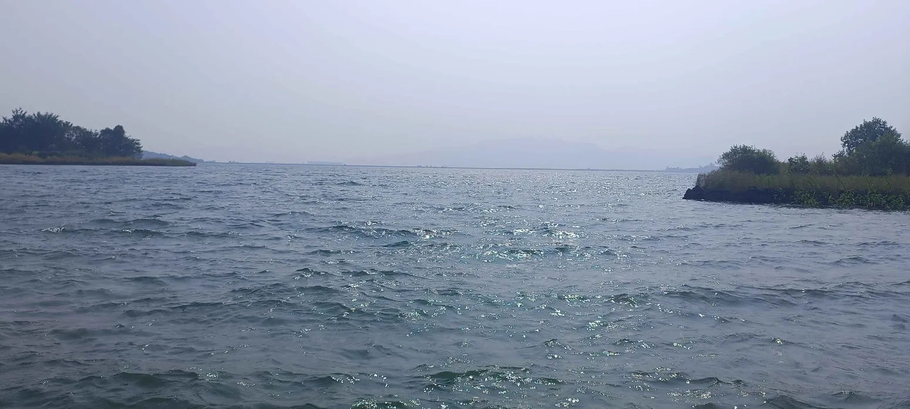

hey! am arnab. i am not very creative but i try.
currently am learning webdev and this site is one of my projects (i'll keep updating it as i learn).
beyond the screen, i enjoy photography, gaming, music, reading books and exploring random things just for fun.
this site is a blend of my thoughts, work, and whatever else I feel like sharing. feel free to look around.
from the archives
waves
8/3/2025

changes
7/3/2025
messed around with the background and finally got it to cover the whole page.
added some nice blurry glows, looks way better now. still figuring out the best spots for them tho.
first post
6/3/2025
its 12:57 am rn and i just completed my site. i had so much fun making this site.
theres still a lot to improve and looking forward to making it even better as i learn.
find me on discord, bluesky, lastfm, letterboxd
heyarnab@proton.me